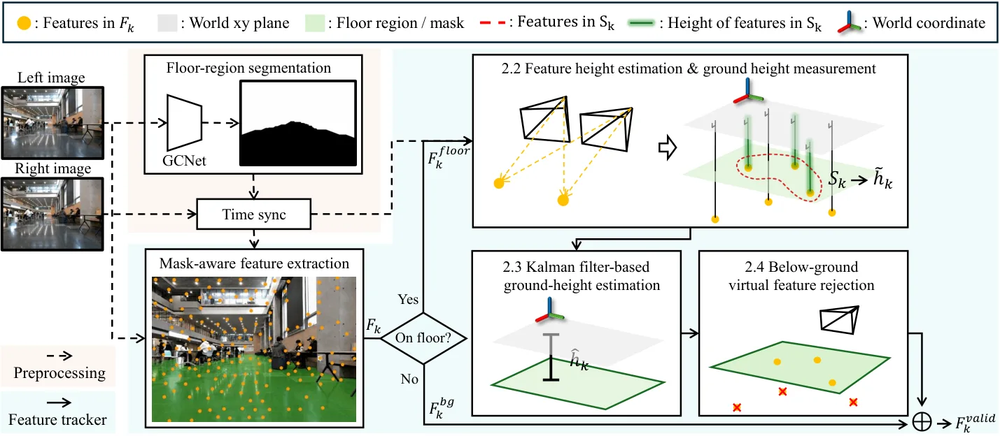
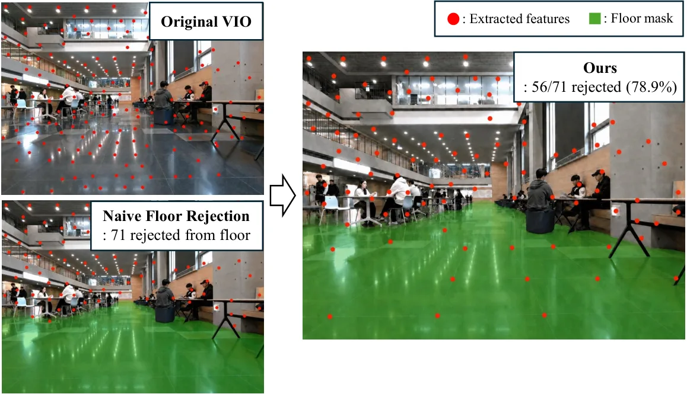
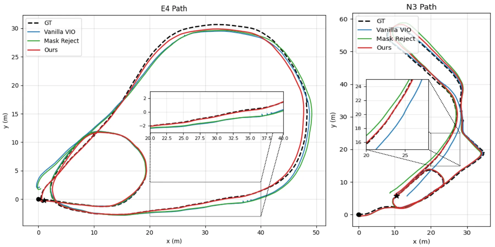
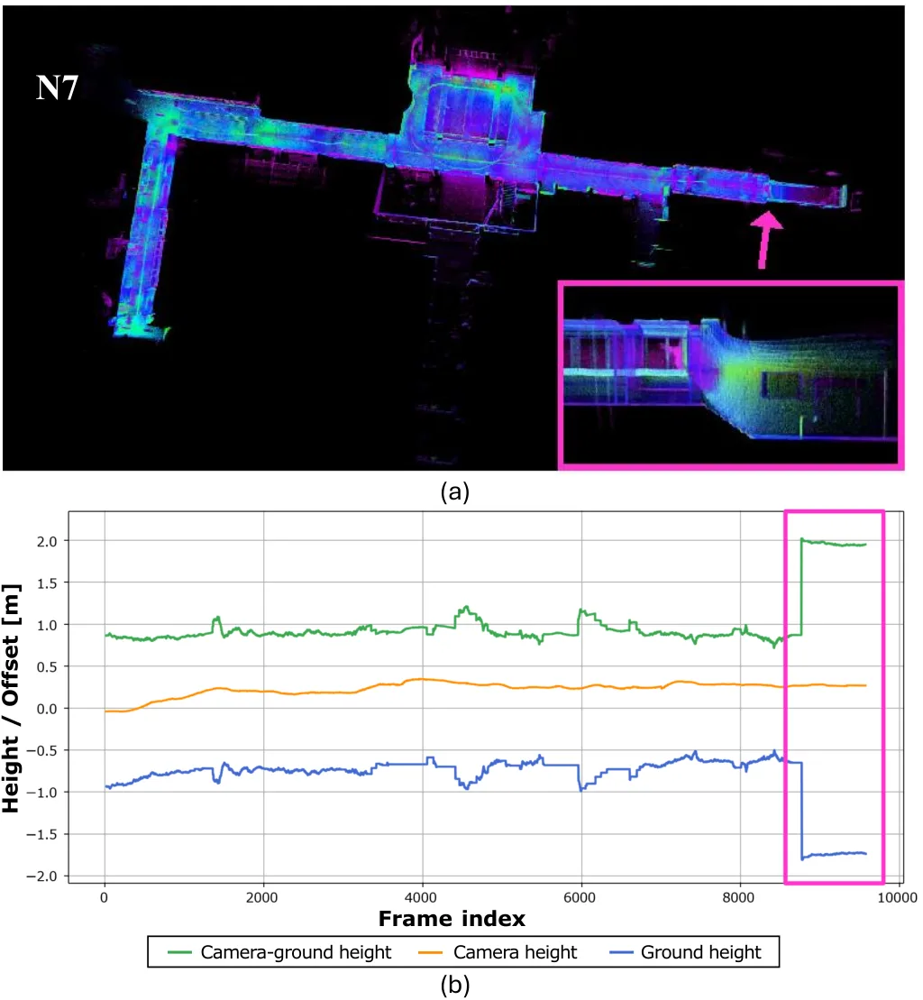

反射鲁棒的立体视觉惯性里程计：用卡尔曼滤波估地面高度，只剔除“地面以下”的虚拟特征
Reflection-Robust Stereo Visual-Inertial Odometry via Kalman-Filtered Ground-Height Estimation
前端先用 GCNet 实时分割出地面掩码，把特征分成地面区与背景区；对地面区特征沿重力方向算高度，聚合出逐帧地面高度观测及其不确定性（立体视差 + 位姿平移/旋转项传播），再用带 NIS 门控的标量卡尔曼滤波平滑；剔除判据是特征高度与估计地面高度的差 e_i 超过 β√(P_k+U_i) 的不确定性裕度。背景特征全部保留，地面特征只保留满足 e_i≤δ_i 的部分。在 KAIST/Yonsei 八条真实反光地面序列上，VINS-Fusion 在 E4 上 ATE 从 0.722 m 降到 0.335 m、N3 从 0.845 降到 0.460，Yonsei 1 从 1.394 降到 1.168；N7 因强镜面反射反而从 0.265 升到 0.338。地面高度误差除 E11（0.088 m）外均 ≤0.05 m；GCNet-S 8.96 ms、几何过滤 4.93 ms，VINS-Fusion 处理频率 15.0→14.7 Hz。
ATE on E4
rejected floor features
ground-height error
runtime
作者、单位与技术谱系 · Research context
作者与单位
研究脉络
- VINS-Fusion（2019）方法基座关系：作为被增强的立体惯性 VIO 前端与后端，本文的过滤结果直接送入其优化。[论文 §3.1 与表 2]
- DynaVINS / DynaVINS++（同实验室）团队前作关系：同属 KAIST Urban Robotics Lab 的动态环境 VIO 系列，本文用 DynaVINS 作为第二个宿主前端并验证恢复收敛。[论文表 2 与参考文献 [3][4]]
- Zhou et al. RGB-D 地面平面剔除上游工作关系：同样用地平面几何剔除远处特征，但用稠密深度 + RANSAC，计算重且易被虚拟特征污染；本文改为稀疏特征 + 标量滤波。[论文 §1]
合作网络
- KAIST 与 DynaVINS 系列Hyun Myung → DynaVINS关系：同一团队共同署名[论文参考文献 [3][4]]
- 论文与 GCNet 分割模型本文前端 → GCNet关系：分割模型依赖[论文 §2.1 与 §3.1]
- KAIST 自采数据KAIST → E4/E11/N3/N7/Yonsei 序列关系：自采数据与参考轨迹[论文 §3.1]
作者与单位来自论文首页；团队前作关系依据参考文献与共同署名；未发现公开材料说明具体师生关系，故不推断。
方法本质拆解 · What actually changed
只训练一个分割网络
GCNet-S 在 Yonsei/KAIST 自采数据与 OpenLORIS 上从头训练 20,000 次迭代、批大小 4，评测序列按楼宇划分不参与训练；除此之外没有任何学习组件，滤波与剔除都是解析算法。因此方法的主体不是“学出来的”，而是几何判据加状态估计。
约束是地面平面与重力方向
所有判断都建立在“地面是局部平面、重力方向初始化后固定”的假设上：特征高度沿重力投影，地面高度是标量，剔除阈值由高度差与不确定性决定。没有引入 IMU 之外的新传感器，也没有学习式先验。
前端过滤，后端不变
推理时每帧先跑分割与三角化，更新标量卡尔曼滤波，再按裕度筛特征，最后把保留特征交给原 VIO 后端；后端优化完全不变。因此它可以作为插件接到 VINS-Fusion、DynaVINS 等任意特征法前端。
用“物理上不可能”筛掉虚拟观测
镜面反射产生的特征在几何上落到地面以下，这是物理上不可能的；方法通过估计地面高度把这个不可能变成可检验的阈值，并用不确定性放宽边界，避免误删真实地面纹理。它没有做的是识别“镜面反射本身”，也没有利用镜面几何，所以遇到镜面反而有用的场景（N7）会退化。
输入 = 立体图像 + IMU；改变的位置 = VIO 前端特征筛选；约束/动作 = 地面高度卡尔曼滤波 + 不确定性裕度剔除；直接效果 = E4 ATE 0.722→0.335 m，处理频率仅降 0.3 Hz。

桥接价值Bridge
桥接价值
它把“前端特征质量”这个常被当作工程细节的问题，变成一个可估计的几何量：地面高度。对我们做室内机器人/多传感器融合来说，反光地面、玻璃幕墙、湿滑地面都是同一类非朗伯面问题，这篇给出的判据（特征是否落到估计地面以下）可以推广到其他“物理上不可能”的观测。方法本身很轻，适合作为现有 VIO 的前置过滤器，而不是替换整个系统。
方法与模块Method
方法摘要
GCNet 实时分割地面区域，地面区特征沿重力方向三角化出高度，聚合成带不确定性的逐帧地面高度观测；标量卡尔曼滤波做预测-门控-更新，NIS 超过阈值就丢弃该观测，连续被拒但彼此一致的观测则触发重置以跟随真实台阶。剔除阶段对每个地面特征计算高度差与其方差，超过 β√(P+U) 才判为“地面以下虚拟特征”，背景特征全部保留。整个前端只增加两个轻量模块，不改变后端优化。
可迁移模块
第一是可复用的“高度差 + 不确定性裕度”判据：不需要稠密深度或 RANSAC 拟合平面，只用稀疏特征三角化就能判断观测是否物理可行。第二是 NIS 门控 + 一致性重置的状态机：既能拒绝瞬时污染，又能在真实地面高度变化（台阶、坡道）时恢复，这套逻辑可以直接搬到我们其他滤波器（如零速修正、地面约束）的门控设计。第三是异步分割节点的工程做法：GCNet-S 独立跑 30 Hz，几何过滤 4.93 ms/次，主 VIO 频率只掉 0.3 Hz，说明它可以低侵入地接入现有系统。

证据Evidence
关键证据与数字
八条真实序列、五次运行取中位数：VINS-Fusion 在 E4 上 ATE RMSE 0.722→0.335 m、N3 0.845→0.460 m、Yonsei 1 1.394→1.168 m、Yonsei 2 1.416→1.303 m、Yonsei 3 0.853→0.742 m；但 N7 从 0.265 升到 0.338 m、E11 从 1.238 升到 1.317 m。DynaVINS 上该方法让四条原本发散的序列恢复收敛（E4、N7(hand) 等），N3 从 2.557 降到 0.550 m。Yonsei 场景中地面区 71 个特征里剔除 56 个（78.9%），同时保留有效地面特征；地面高度平均误差 E4 0.029 m、N3 0.050 m、E11 0.088 m。运行时 GCNet-S 8.96 ms、过滤 4.93 ms，VINS-Fusion 15.0→14.7 Hz。
边界与下一步Limits & Next Step
边界与风险
强镜面反射会反噬：N7 的地面接近镜面，虚拟特征反而提供了有用约束，剔除后 ATE 变差（0.265→0.338）。暗光且地面特征稀疏时，掩码与高度观测都不可靠，E11 的地面高度误差升到 0.088 m、轨迹也略退化。方法假设地面局部水平且重力方向在初始化后固定，遇到明显坡道或相机大角度倾斜时，“地面高度”这个标量可能不足以描述；所有实验都是自采数据、以 FAST-LIO2 为参考轨迹，没有公开数据集或与他人方法的统一评测。
下一步实验
先在我们现有的室内序列上复现“原版 / 粗暴删地面 / 本文判据”三组对照，特别要包含玻璃幕墙与湿地面场景，看剔除率与 ATE 的关系是否也出现 N7 式反转。第二步把标量地面高度换成平面参数（法向+距离），检验坡道与倾斜视角下是否更稳，同时比较计算开销。第三步做消融：把 NIS 门控关掉、把不确定性裕度 β 设为 0，分别看轨迹抖动与有效特征保留率，确认增益到底来自“几何判据”还是“滤波器平滑”。



